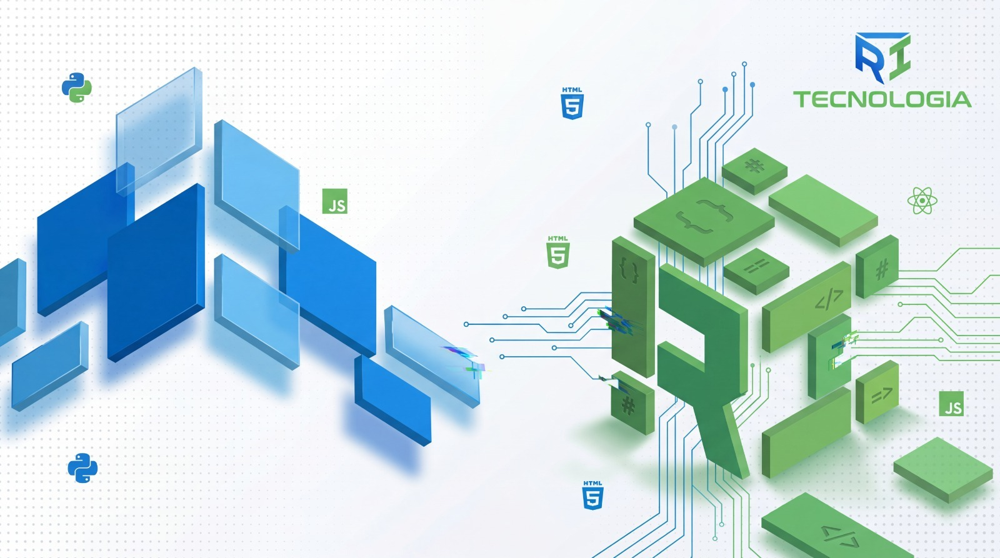

Automação de processos
Elimine tarefas repetitivas e libere a equipe para o que importa — fluxos inteligentes ligados aos seus sistemas.
Automação, software e infraestrutura para empresas que precisam escalar sem perder controle — do diagnóstico à produção.

O que resolvemos
Se algo disso soa familiar, é exatamente onde a gente entra.
Processos manuais que consomem horas da equipe
Sistemas desconectados e dados espalhados
Falta de visibilidade em tempo real
Dificuldade de escalar sem contratar na mesma proporção
Serviços
Da automação pontual ao sistema sob medida — desenhado para o seu contexto.
Elimine tarefas repetitivas e libere a equipe para o que importa — fluxos inteligentes ligados aos seus sistemas.
KPIs que a liderança realmente usa: painéis, alertas e métricas para decidir com base em dados, não em intuição.
Conecte ERPs, CRMs, planilhas e ferramentas legadas em um fluxo único — sem silos e sem retrabalho.
Apps e sistemas full-stack, do discovery ao go-live — com sustentação e evolução em produção.
Bancos otimizados, monitoramento e cloud com segurança — a base sob a qual o restante da operação roda.
CI/CD, monitoramento e práticas de segurança para entregar com confiança e manter estabilidade no dia a dia.
Clientes
Projetos em energia, educação, crédito e transformação digital — de instituições de referência a grupos em escala.


Como trabalhamos
Processo transparente, entregas incrementais e foco em valor desde o primeiro contato.
Mapeamos processos, sistemas e gargalos. Mostramos onde a tecnologia gera mais impacto — e o que não vale a pena automatizar.
Roadmap claro com prioridades, escopo e entregas incrementais. Você sabe o que sai em cada etapa — sem surpresas.
Desenvolvimento iterativo com acompanhamento próximo. Automações, integrações e sistemas sobem para produção com validação contínua.
Métricas visíveis, suporte pós-go-live e melhoria contínua — a solução acompanha o ritmo do seu negócio.
Casos de uso
Cenários em que automação e engenharia geram valor rápido — com benefício claro para a operação.
Operações
Menos trabalho manual e menos erros em tarefas repetitivas.
Gestão
Decisões com base em dados atualizados, não em planilhas avulsas.
Integrações
Dados fluindo entre sistemas — sem retrabalho de digitação.
Produto
Software em produção cedo, com evolução contínua após o go-live.
Sobre
Entregamos o que a operação precisa no dia a dia: automação de processos, integrações entre sistemas, dashboards, aplicações sob medida e infraestrutura com monitoramento. Atuamos há mais de 4 anos em energia, educação e serviços financeiros — do discovery à sustentação em produção.
Backend, frontend, dados, DevOps e monitoramento no mesmo time.
Do alinhamento com o negócio à operação em produção.
Valor visível cedo, com validação contínua dos stakeholders.
Soluções robustas, escaláveis e pensadas para o uso real.
Tecnologia traduzida para linguagem de negócio — sem jargão desnecessário.
Evolução e suporte após o go-live, não só o projeto fechado.
Stack
As ferramentas certas para cada contexto — sem modismo, com foco em resultado e manutenção.
Interfaces rápidas e consistentes.
Serviços sob medida para o seu domínio.
Performance e confiabilidade em produção.
Deploys reproduzíveis e estáveis.
Observabilidade do que importa.
Fechando o ciclo da operação.
Dúvidas frequentes
Respostas diretas sobre como funciona o primeiro contato.
Sim. No diagnóstico entendemos o cenário, apontamos oportunidades e sugerimos o melhor caminho — sem compromisso de contratação.
Você agenda pelo WhatsApp. Alinhamos data e objetivos, fazemos uma conversa de diagnóstico e retornamos com próximos passos claros.
Sim. Trabalhamos de forma remota com acompanhamento próximo. Quando o projeto exige, combinamos interações presenciais.
Próximo passo
Agende um diagnóstico gratuito no WhatsApp. Entendemos o cenário, apontamos oportunidades e mostramos o melhor caminho — sem compromisso.